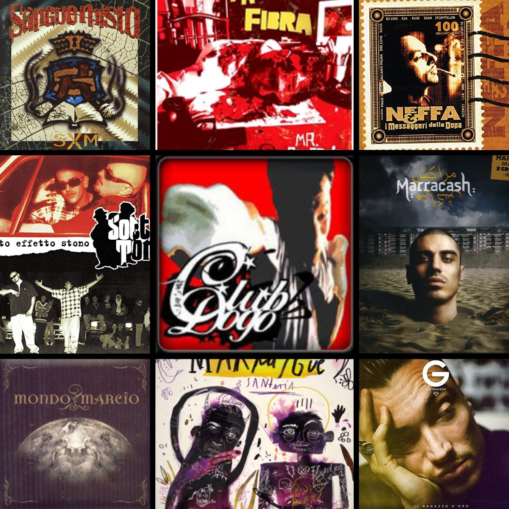

Storia del Rap e Hip-Hop Americano
Il rap americano è nato negli anni '70 ed è cresciuto fino a diventare uno dei generi musicali più influenti al mondo.
- Le Origini e l'Era Old School (1970-1985)
Il rap nasce negli anni ’70 nel South Bronx di New York, un’area economicamente depressa con una forte predominanza afroamericana. La cultura hip-hop, di cui il rap è un elemento centrale, si sviluppa attorno a quattro pilastri fondamentali: il DJing (manipolazione di dischi), l’MCing (rapping), il graffiti e il B-boying (danza e stile). Il primo grande DJ, DJ Kool Herc, immigrato giamaicano, introduce tecniche come il "break beat", dando origine al break dancing. I graffiti, iniziati da Taki 183 nel 1972, trasformano i treni di New York in tele per espressioni artistiche. Questa fase culmina con l’esplosione di “Rapper’s Delight” dei Sugarhill Gang nel 1979, che porta il rap al successo nazionale, e con figure iconiche come Grandmaster Flash e Afrika Bambaataa, i pionieri dell’era “Old School”.
- L'Era New School e il Gangsta Rap (1986-1993)
A metà anni ’80, il rap evolve con la “New School”, capitanata dai Run-D.M.C., che fondono rap e hard rock, rendendo il genere più mainstream. Nascono etichette come Def Jam, che promuovono artisti innovativi come LL Cool J e i Beastie Boys. In questo periodo, emerge anche il rap impegnato di Public Enemy, portavoce di un’ideologia politica radicale. Sul fronte opposto, il gangsta rap prende piede con N.W.A. e album iconici come Straight Outta Compton (1989), raccontando la dura realtà della vita urbana. La rivalità tra le coste Est e Ovest culmina tragicamente con gli omicidi di Tupac Shakur e The Notorious B.I.G., che segnano la fine di un’epoca.
- La Dominazione Commerciale e l'Era del “Dirty South” (1994-2009)
Negli anni ’90, il rap diventa il genere musicale più venduto negli Stati Uniti, guadagnando popolarità anche grazie a figure come Jay-Z, Missy Elliott, e la Wu-Tang Clan. Parallelamente, la scena del sud degli Stati Uniti, il “Dirty South”, guadagna attenzione con artisti come OutKast, Lil Wayne e Master P, portando nuovi suoni e stili nel mainstream. Eminem, scoperto da Dr. Dre, conquista il successo globale con 8 Mile (2002), aprendo la strada a nuove generazioni di artisti. Il rap diventa una forza culturale globale, influenzando moda, cinema e altre industrie, ma la crescente commercializzazione solleva critiche da parte dei puristi del genere.
- L’Era Digitale e l’Espansione Globale (2010-presente)
Con l’avvento del digitale e piattaforme come SoundCloud, il rap diventa accessibile a una nuova ondata di artisti e fan. Emergono sottogeneri come il “mumble rap”, guidato da artisti come Juice WRLD e Lil Uzi Vert. Kendrick Lamar, con album come DAMN. (2017), dimostra che il rap può ancora essere poetico e socialmente rilevante, guadagnando il Pulitzer per la musica. Nel frattempo, produttori come Pharrell Williams e Timbaland definiscono l’evoluzione sonora del genere. L’influenza del rap si estende anche alla moda e alla politica, con artisti come Kanye West e il duo Beyoncé-JAY-Z che dominano il panorama culturale globale.

La Storia del Rap Italiano
Il rap italiano, nato come trasposizione del rap americano e strettamente legato alla cultura hip hop, ha avuto un'evoluzione ricca e complessa. Dall'inizio degli anni Ottanta, quando i primi artisti si cimentavano con testi in inglese, fino alla scena contemporanea, il rap in Italia ha attraversato diverse fasi che hanno segnato profondamente la cultura musicale del Paese.
- Gli Anni '80: I Primi Passi
Il rap italiano muove i suoi primi passi negli anni Ottanta, periodo in cui la scena hip hop inizia a svilupparsi in città come Milano, Bologna e Roma. In questa fase embrionale, molti artisti sperimentano con testi in lingua inglese, ispirandosi ai giganti del rap americano. Tuttavia, la vera identità del rap italiano emerge quando si cominciano a utilizzare testi nella lingua madre, rendendo il genere più autentico e accessibile al pubblico locale.
- Gli Anni '90: Old School e Posse
I primi anni Novanta rappresentano l'epoca dell'Old School, caratterizzata dall'attivismo delle "Posse", collettivi musicali politicamente impegnati che usano il rap come strumento di protesta e rivendicazione sociale. Questi artisti trovano spesso nei centri sociali il luogo ideale per esprimere le proprie idee e connettersi con la comunità. In questa fase emergono gruppi come gli Articolo 31, i Sangue Misto e gli Uomini di Mare, che portano un approccio innovativo al rap italiano. L'album SxM dei Sangue Misto, pubblicato nel 1994, diventa una pietra miliare del genere, grazie alle sue basi cupe e sperimentali e ai testi incisivi. Allo stesso modo, album come Strade di città degli Articolo 31 segnano il passaggio del rap da fenomeno underground a fenomeno di massa.
- La Golden Age (1994-2000)
La seconda metà degli anni Novanta è considerata la "Golden Age" del rap italiano, un periodo di grande creatività e affermazione artistica. Durante questi anni, artisti come Kaos One, Neffa, Sottotono e Bassi Maestro pubblicano album iconici che consolidano il rap come genere musicale rispettato in Italia. Tra i lavori più significativi dell'epoca troviamo Messa di vespiri e Così com'è degli Articolo 31, che ottengono un enorme successo commerciale. Anche artisti come Joe Cassano, con il suo album postumo Dio Lodato, e gli Uomini di Mare, con Sindrome di fine millennio, lasciano un'impronta indelebile sulla scena. Questo periodo vede il rap italiano affinarsi nei testi, nella metrica e nelle produzioni, gettando le basi per la sua espansione futura.
- Gli Anni 2000: La Rinascita e il Mainstream
Dopo una fase di stanchezza alla fine degli anni Novanta, il rap italiano rinasce con l'inizio del nuovo millennio. Album come Mi fist dei Club Dogo, Mr. Simpatia di Fabri Fibra e Background di Bassi Maestro segnano una nuova era di sperimentazione e successo. In questo periodo, artisti come Caparezza riescono a raggiungere un pubblico più ampio, portando il rap nelle radio e nei festival musicali. Grazie a etichette indipendenti come Vibra Records e all'ascesa di nuove piattaforme come YouTube, il rap si diffonde rapidamente, anche grazie ai primi contest di freestyle come 2theBeat e Tecniche Perfette. Fabri Fibra, Mondo Marcio e Marracash diventano volti simbolo del genere, portandolo ai vertici delle classifiche italiane.
- Dal 2010: Il Boom Mainstream e il Dualismo Underground
Con il successo di brani come Tranne te di Fabri Fibra, il rap italiano entra definitivamente nel mainstream, attirando l'attenzione di un pubblico sempre più ampio. Artisti come Salmo, Emis Killa, Clementino e Rocco Hunt si impongono sulla scena, mentre il collettivo Machete, grazie al web, diventa una delle realtà più influenti del panorama musicale italiano. Nonostante il boom commerciale, la scena underground continua a prosperare, con artisti come Mistaman, Lucci e Stokka & MadBuddy che mantengono vivo lo spirito originario del rap italiano. Questa dualità tra mainstream e underground rappresenta la ricchezza e la complessità del genere, che continua a evolversi senza mai perdere il legame con le sue radici.

